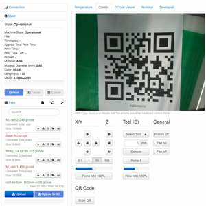

Projects

Filtracker
- Developed project to streamline operations of industrial scale 3D printing.
- Implemented material tracking and print status with Python, RaspberryPi, and computer vision library, OpenCV.
- Ensured data security by backing up data to the cloud.
- Improved output by 40% as machine operators could monitor the status of machines in a unified dashboard.

Att Business System
- Created web app to allow for easy invoicing, inventory tracking, accurate accounting, and in depth analysis of vital business data.
- Built with Laravel(PHP), MySQL, JQuery & JavaScript.
- Designed/deployed infrastructure on an AWS Linux instance.
- Sufficient inventory level rates improved from 85% to 99%.

Be Alive Coaching
- Created a web presence for a life coaching business to increase customer awareness and facilitate e-commerce sales.
- Customized version of WordPress contains a membership site and enables purchasing of products/services.
- Increased customer inquiries by 50% and established a new sales channel for premium content.

Att Minerals
- Developed a customized version of WordPress and WooCommerce for attminerals.com
- Integrated with payments solution Stripe
- Implemented security protocols to secure customer information and purchase data.
- Utilized custom hooks and functions to create an intuitive user experience.
- Increased sales by 100% after deploying a new shopping cart system.